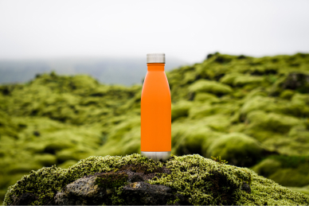

QU3NCH!
Refresh!!!
Boost!!!
Energy!!!
For athlete!!!
Power!!!
QU3NCH! is the latest craze in the beverage industry, and it's no
surprise why. This unique drink
was
created by a young entrepreneur named Sarah Smith, who saw a need for
a more refreshing and
hydrating option on the market.

Refresh!!!
Boost!!!
Energy!!!
For athlete!!!
Power!!!
Sarah had always been an avid athlete and was always on the lookout
for ways to improve her
performance. She quickly became frustrated with the lack of options available, and decided to take
matters into her own hands. After months of research and experimentation,
Sarah finally created the perfect formula for
QU3NCH!.
Refresh!!!
Boost!!!
Energy!!!
For athlete!!!
Power!!!
The main ingredient in QU3NCH! is a special
blend of electrolytes and vitamins that work
together to
help the body hydrate faster and more efficiently. This makes it the perfect drink for athletes, as
well as anyone who is looking to stay hydrated throughout the day.

Refresh!!!
Boost!!!
Energy!!!
For athlete!!!
Power!!!
But QU3NCH! isn't just for athletes. It's also a great option for
people who are looking to
improve
their overall health and wellness. The electrolytes in QU3NCH! can
help regulate blood
pressure and
support a healthy immune system, making it a valuable addition to anyone's diet.
Refresh!!!
Boost!!!
Energy!!!
For athlete!!!
Power!!!
One of the things that sets QU3NCH! apart from other sports drinks is
its delicious taste.
Sarah worked tirelessly to come up with a formula that was both
refreshing and satisfying, and it shows in
the final product. QU3NCH! comes in three delicious flavors - lemon,
berry, and orange - all
of
which are sure to satisfy even the pickiest of palates.
Refresh!!!
Boost!!!
Energy!!!
For athlete!!!
Power!!!
Sarah's passion for health and wellness extends beyond just the
creation of QU3NCH!. She is
also a
strong advocate for sustainability and uses eco-friendly packaging
for all of her products. This
commitment to the environment sets QU3NCH! apart from other beverage
companies and has helped
it
gain a loyal following.

Refresh!!!
Boost!!!
Energy!!!
For athlete!!!
Power!!!
QU3NCH! has quickly become a popular choice among athletes, fitness
enthusiasts, and
health-conscious individuals all over the world. Its unique blend of electrolytes and
vitamins has
helped it stand out in a crowded market, and Sarah's commitment to
sustainability has only added to
its appeal.
Refresh!!!
Boost!!!
Energy!!!
For athlete!!!
Power!!!
So, what's next for QU3NCH! and its creator Sarah Smith? With the
success the company has
seen so
far, it's clear that the sky is the limit. Sarah is already working on
new and innovative ways to
improve the formula and make it even more accessible to people all over the world.
Refresh!!!
Boost!!!
Energy!!!
For athlete!!!
Power!!!
One thing is for sure - QU3NCH! is here to stay, and its creator
Sarah Smith is sure to continue
making waves in the beverage industry for years to come. If you're looking for a refreshing,
hydrating, and sustainable drink option, look no further than QU3NCH!.